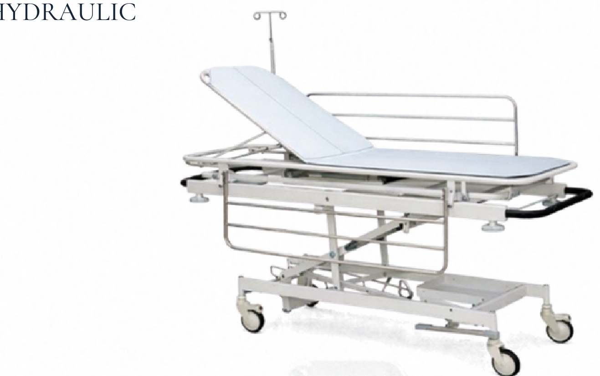

AV-HET
Catalog Pg. 1

Hospital Beds & Stretchers
Emergency Recovery Trolley Hydraulic
Heavy-duty hydraulic emergency recovery trolley with X-ray compatible translucent top and drop-down stainless steel safety side rails.